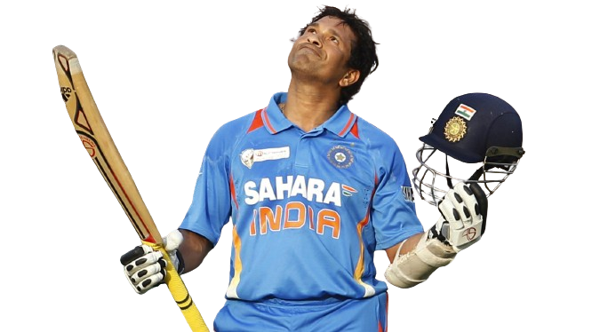

☛ Sachin is the highest run-scorer in international cricket and he is
the only player to have scored one hundred international centuries.
☛ He is also the first batsman to score a double a hundred in a
One-day Internationals(ODI), he is also the player to complete more
than 30,000 runs in international cricket and is also the holder of
the record for the most runs in both Test and ODI cricket.
☛During the 2003 Cricket World cup tournament, Sachin was the highest
run-scorer where he scored 673 runs in 11 matches and helped India
reach the final. In the final match, India lost the world cup to
Australia but Sachin Tendulkar was given the man of the tournament
award.
☛ Sachin Tendulkar became the first batsman to score a double century
in a one-day international match. In the year 2010, Sachin Tendulkar
went on and scored 200 runs in just 147 balls against South Africa in
Gwalior. That inning is remembered by many crickets as it showed the
calibre of Sachin Tendulkar to the world.
☛ The second most memorable inning of Sachin Tendulkar was his knock
against Pakistan in Rawalpindi where he scored 141 runs in just 135
balls. Despite Pakistan winning the match, Sachin Tendulkar was
declared the man of the match.
☛Sachin Tendulkar is the first and the only batsman to score 100
international centuries. He was the first batsman to excel in all
three formats of the game. He finished his career as the highest
run-scorer in the history of test match cricket.
☛ ndia is a country where cricket is treated like a religion and
Sachin Tendulkar is the God of cricket. This is enough to justify the
achievements of Sachin Tendulkar.
The Sachin Tendulkar

Achievments
Description
'Cricket is a religion in India and Sachin is God'.
☛ Sachin Ramesh Tendulkar was born on 24 April 1973. His father's name
is Ramesh Tendulkar, who was a Marathi novelist who wrote many Marathi
novels. His mother's name is Rajni Tendulkar. Sachin is a former
Indian cricket player who was also the captain of the Indian national
team in many events.
☛ He is considered to be the greatest batsman in the history of Indian Cricket after Sir Donald George Bradman and Sir Vivian Richards.
☛For a few people, he is a god and for others, he is the epitome of success on which the future of Indian cricket is the judge. Throughout his career of 30 years, he has accomplished wonders for the Indian cricket team and that is why many people worship him as the God of cricket.
☛ On 15 November 1989, Sachin Tendulkar made his international debut against Pakistan in Karachi. Pakistans's cricket team was known for its bowling during those days where the combo of Wasim Akram and Waqar Younis were considered to be the most dangerous bowling duo. But Sachin faced them gracefully and even made a few runs.
☛During the years 1994-1999, Sachin Tendulkar was in his twenties and his performance was at its peak. He opened the batting against New Zealand in 1994 and made 84 runs from just 49 balls, He then went on and scored his first ODI century against Australia. It took him around 78 ODI's to score his first century but it was worth the wait.
☛ The main contribution of Sachin Tendulkar was the way he changed the opening of cricket. The Indian team was struggling with opening batsmen as many of them were unable to give India a good start against any teams. The whole scenario changed when Sachin was allowed to open the innings against New Zealand in 1992 and he made it count. After that match, he was the opening batsman for the Indian cricket team.
☛ Before getting recognized by the world for his talent, Sachin Tendulkar played a school cricket tournament match where he had a 664 runs partnership with Vinod Kambli. Sachin was only 16 years old when he played that match and is considered to be the turning point in Sachin Tendulkar's life.
☛ On 10 October 2013, Sachin Tendulkar announced his retirement from all forms of cricket after a two-test match against the West Indies in November. The BCCI had arranged two farewell matches to be played at Kolkata and Mumbai. He scored 74 runs in his last test innings against West Indies and fell short of 79 runs to complete 16,000 runs in test cricket. The cricket association of Mumbai and Bengal had organised events to mark his retirement from the sport. Various politicians and international celebrities were present to witness the last inning of the master blaster.
☛On 10 October 2013, Sachin Tendulkar announced his retirement from all forms of cricket after a two-test match against the West Indies in November. The BCCI had arranged two farewell matches to be played at Kolkata and Mumbai. He scored 74 runs in his last test innings against West Indies and fell short of 79 runs to complete 16,000 runs in test cricket. The cricket association of Mumbai and Bengal had organised events to mark his retirement from the sport. Various politicians and international celebrities were present to witness the last inning of the master blaster.
☛ He is considered to be the greatest batsman in the history of Indian Cricket after Sir Donald George Bradman and Sir Vivian Richards.
☛For a few people, he is a god and for others, he is the epitome of success on which the future of Indian cricket is the judge. Throughout his career of 30 years, he has accomplished wonders for the Indian cricket team and that is why many people worship him as the God of cricket.
☛ On 15 November 1989, Sachin Tendulkar made his international debut against Pakistan in Karachi. Pakistans's cricket team was known for its bowling during those days where the combo of Wasim Akram and Waqar Younis were considered to be the most dangerous bowling duo. But Sachin faced them gracefully and even made a few runs.
☛During the years 1994-1999, Sachin Tendulkar was in his twenties and his performance was at its peak. He opened the batting against New Zealand in 1994 and made 84 runs from just 49 balls, He then went on and scored his first ODI century against Australia. It took him around 78 ODI's to score his first century but it was worth the wait.
☛ The main contribution of Sachin Tendulkar was the way he changed the opening of cricket. The Indian team was struggling with opening batsmen as many of them were unable to give India a good start against any teams. The whole scenario changed when Sachin was allowed to open the innings against New Zealand in 1992 and he made it count. After that match, he was the opening batsman for the Indian cricket team.
☛ Before getting recognized by the world for his talent, Sachin Tendulkar played a school cricket tournament match where he had a 664 runs partnership with Vinod Kambli. Sachin was only 16 years old when he played that match and is considered to be the turning point in Sachin Tendulkar's life.
☛ On 10 October 2013, Sachin Tendulkar announced his retirement from all forms of cricket after a two-test match against the West Indies in November. The BCCI had arranged two farewell matches to be played at Kolkata and Mumbai. He scored 74 runs in his last test innings against West Indies and fell short of 79 runs to complete 16,000 runs in test cricket. The cricket association of Mumbai and Bengal had organised events to mark his retirement from the sport. Various politicians and international celebrities were present to witness the last inning of the master blaster.
☛On 10 October 2013, Sachin Tendulkar announced his retirement from all forms of cricket after a two-test match against the West Indies in November. The BCCI had arranged two farewell matches to be played at Kolkata and Mumbai. He scored 74 runs in his last test innings against West Indies and fell short of 79 runs to complete 16,000 runs in test cricket. The cricket association of Mumbai and Bengal had organised events to mark his retirement from the sport. Various politicians and international celebrities were present to witness the last inning of the master blaster.